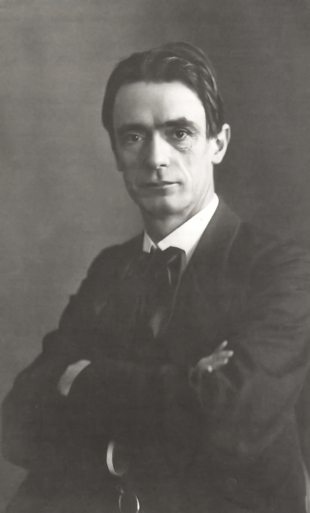

Рудольф Штайнер
Рудольф Штайнер родился 27 февраля 1861 года Австро-Венгерской империи. В возрасте восьми лет Штайнер уже обладал незаурядным способом мышления, отличавшим его от других. Признавая его способности, отец отправил Рудольфа в школу в Винер-Нойштадт, а затем в Технический университет в Вене. Изучая и осваивая гораздо больше предметов, чем было в его учебной программе, он всегда возвращался к проблеме самого знания, и тема эта будет волновать его на протяжении всей жизни.
В 1886 году Штайнер публикует вступительную книгу под названием «Теория знания, скрытая в мире Гёте». В этом введении к нескольким научным трудам Гёте прозвучала собственная философская концепция Штайнера. В самой своей известной работе «Философия свободы» Штайнер глубже исследует процесс мышления и выдвигает теорию, что свобода может быть достигнута только посредством творческого мышления.